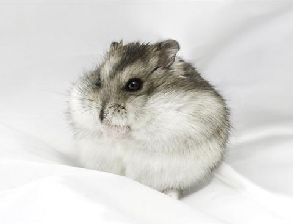

Кофейный напиток на основе эспрессо с добавлением в него подогретого вспененного молока. Толстый слой густой кремовой пенки вместе со сладковатым согревающим молоком и богатым вкусом хорошо сваренного эспрессо – это абсолютное наслаждение…
Flat white, «плоский белый» — кофейный напиток готовится путём добавления нагретого паром молока с небольшим количеством пены в двойную порцию эспрессо. Флэт Уайт придуман в 1980-х годах и до сих пор продолжается спор о том, где же придуман Флэт Уайт – в Австралии или Новой Зеландии, но несомненно, где-то там! Обжарщиком и бариста в результате экспериментов над выявлением баланса вкуса кофе и молока. Бариста отказался от большого количества пены в напитке, уменьшил пропорции молока (110 мл) и увеличил количество кофе (60 мл).
Этот напиток придумали не в Италии. Когда эспрессо распробовали по всему миру, он был горьким, насыщенным, для многих абсолютно новое ощущение. Некоторым не нравилась эта горечь, и они добавляли молоко, чтобы сделать напиток нежнее. Для таких потребителей и придумали кофе Латте. Обычно в кофе латте для смягчения вкуса добавляют больше молока, чем в капучино, но меньше крема. Многие знают, что заказав в Италии латте, можно попасть в неловкое положение, ведь вам принесут стакан… обычного молока.
| ФИО | Буданова Ксения Андреевна | ||
|---|---|---|---|
| Своё фото  | Адрес: ул.Белорусская д. 21, 702А | ||
| 1 семестр 2020/2021 уч. года | Дата | Предмет | Оценка |
| 31.12 | Физика | 8 | |
| 02.01 | ОАИП | 7 | |
| 04.01 | ОИТ | 9 | |
| 07.01 | Математика | 8 | |
| 11.01 | АЛОЦВМ | 8 | |